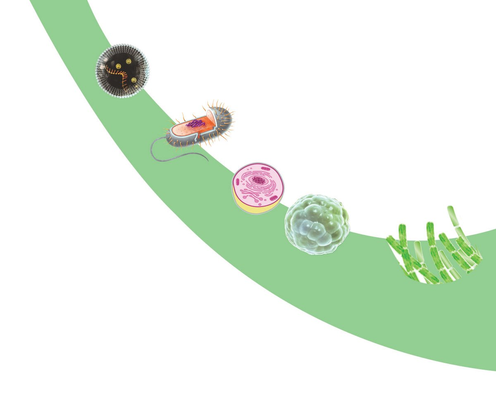
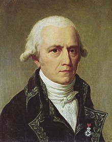
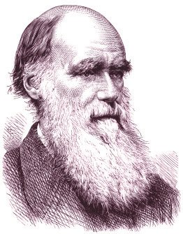
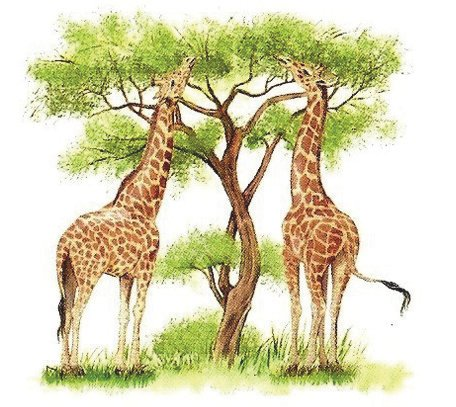
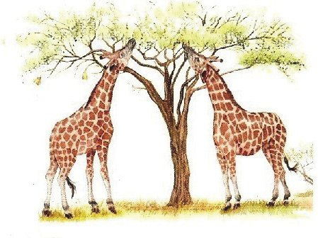
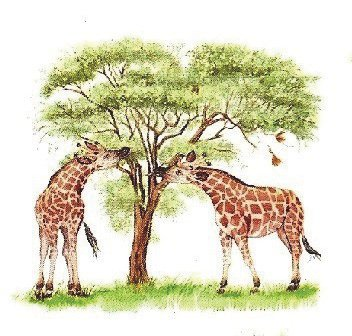
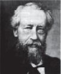
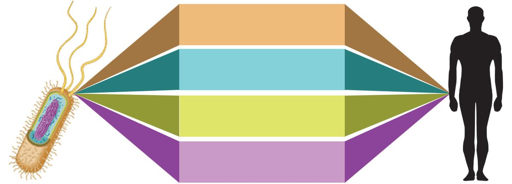
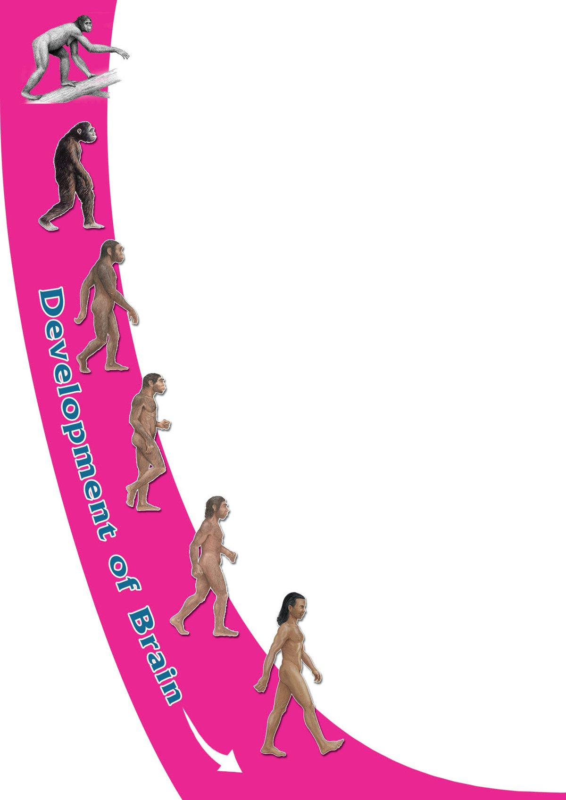

If earth and mars
originated in the same
way, wouldn't there
be organisms on mars
like earth?
Did you notice the child’s doubt?
How did the planets, including earth originate? How might have
life originated? Is there life on other planets? All such questions
have always come under the purview of scientific enquiry.
Science has been able to put forth certain hypotheses on how earth
and life on earth originated. The more predominant theory, on
the origin of life on earth that was formed about 4500 million
years ago, is the Chemical evolution theory. The Panspermia
hypothesis is also a widely discussed one.
Biology - X
The Panspermia argues that life originated in some other planet
in the universe and accidentally reached the earth. The organic
substances obtained from the meteors that fell on earth support
this.
A.I.Oparin
J.B.S.Haldane
The hypothesis that evolved into the theory of chemical evolution
is that life originated as a result of the changes that occurred in
the chemical substances in seawater, under specific conditions
in primitive earth. This theory is generally accepted by the
scientific world due to its experimental evidences. The Russian
scientist A.I. Oparin (1924) and the British scientist J.B.S.Haldane
(1929) are the proponents of this theory.
Analyse illustration 8.1 and prepare a note on the theory of
Chemical evolution in your Science diary.
Atmosphere of primitive earth
• Gases like hydrogen, nitrogen
•
•
•
carbon dioxide, methane,
ammonia, water vapour,
hydrogen sulphide etc.
Source of energy
Thunder and lightning.
Ultraviolet radiations.
Volcanic eruptions.
• No free oxygen.
Condensation of water vapour present in the atmosphere and the resulting
incessant rain led to the formation of oceans.
Complex organic molecules
• Protein
• Polysaccharide
• Nucleotides
• Lipids etc.
Nucleic acids, lipid layer
Primitive cell
Illustration 81. Chemical evolution
Indicators
•
Atmosphere of primitive earth – peculiarities.
•
Sources of energy.
•
Formation of ocean.
•
Chemical reactions that led to the formation of cell.
Biology - X
The scientific basis of this hypothesis regarding the origin of life
was later proved through various experiments.
Urey – Miller Experiment
Urey and Miller conducted their experiment by artificially
recreating the atmosphere of primitive earth that contained
methane, ammonia, hydrogen and water vapour.
Analyse illustration 8.2 and the description, on the basis of the
given indicators and prepare a note in your Science diary.
Stanley Miller
Electric energy
Methane, ammonia,
water vapour
Glass flask
Harold Urey
Condenser
Water
Heat energy
Amino acids get sedimented
Illustration 8.2 Urey – Miller Experiment
In the place of natural energy sources like thunder and lightning in the atmosphere
of primitive earth, high voltage electricity was passed through the gaseous mixture
in the glass flask. Then, this gaseous mixture was cooled with the help of a condenser.
The sediment substances were separated and when observed, organic molecules such
as amino acids, were found. Later many scientists designed similar experiments and
more organic compounds were synthesized. This finally gave more acceptance to
the Oparin – Haldane Hypothesis.
Indicators
•
Atmosphere of primitive earth and chemical components in
the glass flask.
•
Organic molecules formed after the chemical reaction.
In the oceans of primitive earth, organic compounds were formed
due to chemical evolution that continued for millions of years.
On the basis of the given indicators analyse the major events
related to the origin of life as illustrated in the geological time
scale 8.3. Prepare a note in the Science diary.
125
Page 54
Figure fig_ch07_p054_01 (Page 54)

Figure fig_ch07_p054_02 (Page 54)
Biology - X
Primitive cell
Prokaryotes
1
Eukaryotes
2
Colony of eukaryotes
3
4
Multicellular organisms
5
3800
Origin of life on
earth
3500
Origin of
prokaryotes
1500
Origin of
eukaryotes
Millions of years ago
1000
Origin of multicellular
organisms
Illustration 8.3 Geological time scale
Indicators
•
Primitive cell
•
Origin of prokaryotes
•
Origin of eukaryotes
•
Appearance of multicellular organisms
Researches all over the world are still striving to unravel the
mysteries related to the origin of life on earth. Presence of life on
other planets is also a main area of research. Life emerged as a
result of the accidental combining of inorganic molecules.
126
Page 55
Figure fig_ch07_p055_01 (Page 55)

Figure fig_ch07_p055_02 (Page 55)
Biology - X
Many space explorations still undertake the quest to find out
whether similar phenomena occur anywhere else among the
millions of celestial orbs.
The method of science is formulation of inferences on the
basis of evidences obtained through experiments and
observations. Science emerged along with the origin of
human beings. So direct evidences are not available for
explaining the origin of life and the process of evolution
that began a long time before the origin of man. Hence,
scientific concepts in these two areas undergo continuous
changes. This is not a limitation of science. Science is
unprejudiced and accepts all new knowledge formulated
on the basis of derived evidences and rejects or revises the
existing ones. This aspect of Science makes it credible.
Evolution - through theories
Many scientists have attempted to explain the history of evolution
from primitive cells to the biodiversity that exists today. The first
attempt among them was by Jean Baptist Lamarck, a French
biologist.
Lamarckism
The characters developed during the life time
of organisms are called acquired characters.
Lamarck explained that these characters
accumulate through generations and lead to the
formation of new species. According to Lamarck
giraffes had short necks in the beginning. When
Lamarck
they faced food scarcity, they stretched their
necks to reach out to tall trees. Thus giraffes with long necks
emerged through generations (figure 8.1). But this argument was
not accepted by the scientific world as these acquired characters
are not inheritable.
127
Page 56
Figure fig_ch07_p056_01 (Page 56)

Figure fig_ch07_p056_02 (Page 56)

Figure fig_ch07_p056_03 (Page 56)

Figure fig_ch07_p056_04 (Page 56)

Figure fig_ch07_p056_05 (Page 56)
Biology - X
Figure 8.1
Darwinism
A logical scientific theory on evolution was first put forward by
Charles Robert Darwin, an English naturalist. Darwin adopted a
scientific method for formulating inferences through observation
and data analysis. This scientific credibility paved way for the
larger acceptance of Darwin’s theory of evolution.
Darwin’s Voyage
Darwin’s voyage to the Galapagos Islands in the ship HMS Beagle
was a turning point both in his life and in the history of the theory
of evolution. Charles Darwin formulated his theory of evolution
on the basis of the studies conducted on organisms in Galapagos
Islands.
Charles Darwin
Darwin was only 22 years old when he joined a group appointed
by the British government to construct maps of coastal areas. By
the time he returned to Britain after 7 years, he had collected
necessary evidences for his theory of evolution. After further
follow up enquiries, observations and studies, he presented his
theory in the renowned text Origin of Species by Means of Natural
Selection, at the age of fifty. This theory that broke off many
existing beliefs got great acceptance in the scientific world.
Finches were one among the organisms observed and closely
studied by Darwin in the Galapagos Islands. The differences in
the beaks of these finches attracted Darwin.
On the basis of indicators, analyse illustration 8.4 and the
description given below. Write down your inferences in the Science
diary.
Insectivorous finches have small beaks and those that feed on
cactus plants have long and sharp beaks. There were also
woodpecker finches that used sharp beaks to pick small twigs for
feeding on worms from the holes in tree trunks. The ground
finches that feed on seeds with large beaks were also present.
Indicators
•
Which peculiarity of the finches attracted Darwin?
•
How do these peculiarities help finches in their survival?
It is clear that the finches Darwin observed had beaks adapted to
their feeding habits. Another idea that influenced Darwin’s
speculations about the diversity of the beaks of finches was that
of Thomas Robert Malthus, an economist.
Rate of food production is not proportionate to the growth of
human population. Thomas Robert Malthus pointed out that
scarcity of food led to diseases, starvation and struggle for
existence.
Robert Malthus
Analyse illustration 8.5 and the description given below. Identify
the main concepts of the ‘Theory of Natural Selection’ put forward
by Darwin by incorporating Malthusian ideas. Based on the
indicators, prepare a note in your Science diary.
Biology - X
Organisms with variations
Over production
Struggle for existence
Those with no favourable variations
Those with favourable variations
Destroyed
Natural selection
Survive
Favourable variations are transferred to the next generation.
Accumulation of variations inherited through generations.
Origin of new species
Illustration 8.5 Theory of Natural Selection
The Theory of Natural Selection
Every species produces more number of offsprings than that can survive on earth. They
compete with one another for food, space and mates. The competition becomes hard
when the number of organisms is more and the availability of resources is less. Many
variations are visible in organisms. These variations may be favourable or unfavourable.
Those with favourable variations survive in the struggle for existence. Others are
eliminated. Variations that are inherited through generations and repeated differently
help to form species that are different from their ancestors. This type of selection,
done by nature, leads to the diversity of species that we see around us. This is the
explanation of Darwin’s theory which is known as the Theory of Natural Selection.
Indicators
•
Circumstance that leads to severe competition among
organisms.
•
Variations and natural selection.
•
130
Origin of new species.
Page 59
Figure fig_ch07_p059_01 (Page 59)

Figure fig_ch07_p059_02 (Page 59)
Biology - X
Though Darwin identified that continuous variations occurred
in organisms, he could not explain the reasons for these variations.
During his period there was no idea regarding genes,
chromosomes etc. Darwinism was revised in the light of new
information from the fields of genetics, cytology, geology and
paleontology. This modified version of Darwinism is known as
Neo Darwinism.
Mutation Theory
Hugo deVries
You know that changes in genes are one of the
reasons for variations in organisms. Sudden
changes that occur in genes are called
mutations. Mutation theory explains that new
species are formed by the inheritance of such
changes. This theory was formulated by a
Dutch scientist, Hugo deVries. Later it was
explained that mutations that cause variations
lead to the evolution of species.
Evidences of Evolution
There are many evidences to support the evolution of new species.
Paleontology, comparative morphology, physiology and modern
molecular biology provide evidences to validate evolution.
Fossils – Evidence of evolution
Fossils are the remnants of primitive organisms. They are
evidences that explain the history of life on earth.
Fossils may be the body, body parts or imprints of organisms. The
age of fossils can be calculated scientifically. They are categorised
on the basis of geological time scale and their peculiarities are
studied. The oldest known fossils dating from about 3.5 billion
years ago are of prokaryotes. Fossils from different layers of rocks
indicate the evolution of eukaryotes from prokaryotes. Cell Biology
and Molecular Biology make fossil evidences more scientific. What
are the inferences you can arrive at from such studies?
The forelimbs of these organisms differ in their external
appearance. Are they different in their anatomy too?
These forelimbs are made up of blood vessels, nerves, muscles
and bones. Differences in their external appearances are their
adaptations to live in their own habitats. Organs that are similar
in structure and perform different functions are called
homologous organs.
132
Page 61
Figure fig_ch07_p061_01 (Page 61)

Figure fig_ch07_p061_02 (Page 61)
Biology - X
Do such anatomical resemblances justify the inference that all
organisms evolved from a common ancestor?
Discuss and write down your inferences in the Science diary.
Biochemistry and Physiology
How different are microbes, plants and animals in their external
appearance! But there are close resemblances in their cell structure
and physiology.
Observe illustration 8.8.
Enzymes control chemical
reactions.
Energy is stored in ATP
molecules.
Genes determine
hereditary traits.
Bacteria
Carbohydrates, proteins and
fats are the basic substances.
Human being
Illustration 8.8 Biochemistry and Physiology
What proof of evolution do you get from these facts?
Isn’t it clear from these facts that different species that exist today
have a common ancestor? Discuss.
Molecular Biology
Through a comparative study of protein molecules in different
species, the evolutionary relationship among organisms can be
identified. Mutations may occur in the genes that determine the
amino acid sequence in protein molecules. This causes changes
in amino acids. The amino acids in the chain of haemoglobin
in man has been compared to the amino acids in the chain of
other organisms. Available data are listed below. Based on the
indicators, analyse table 8.1 and write your inferences in the
Science diary.
Biology - X
Difference from the amino acids in the chain of
haemoglobin in man
Organism
Chimpanzee
no change
Gorilla
difference of one amino acid
Rat
difference of 31 amino acids.
Table 8.1
This is an effective method to illustrate the branching
pattern of evolution from a common ancestor.
These kinds of molecular studies help to find out the
evolutionary relationship of different species of organisms.
Indicators
•
Which organism is the farthest from humans from the
evolutionary point of view? Why?
•
Which organism is the closest to man from the
evolutionary point of view? What is the reason for
this?
Evolution of Human beings
An evolutionary tree relating to certain organisms
including humans is given below. Organisms show many
similarities as they have evolved from a common ancestor.
Analyse illustrations 8.9 and description on the main
branches in the evolution of human beings. Prepare a note
in your science diary.
Humans, chimpanzee, gorilla, orangutan, gibbon and
monkeys are included in the category Anthropoidea. This
is further classified into Cercopithecoidea and Hominoidea.
Anthropoidea
Illustration 8.9 Evolution of human beings
Indicators
•
Which organism is the closest to humans in specific
characters?
•
How Anthropoidea, Cercopithecoidea and Hominoidea are
related to each other?
•
What are the characteristics of the organisms which belong
to the group hominoidea?
•
“Man evolved from monkeys”. How would you respond to
this statement?
Illustration 8.10 depicts the evolutionary history of modern man.
Formulate inference on how biological changes helped human
being to emerge in the present form, by analysing the illustration.
135
Page 64
Figure fig_ch07_p064_01 (Page 64)

Figure fig_ch07_p064_02 (Page 64)
Biology - X
Ardipithecus ramidus
• The most primitive member of the
human race.
• Fossils were discovered from Africa.
Australopithecus afarensis
• Slender body.
• Fossils were discovered from Africa.
Homo habilis
• Made weapons from stones and
bone pieces.
• Fossils were discovered from Africa.
Homo erectus
• Thick chin and large teeth, had the
ability to stand erect.
• Fossils were discovered from Africa
and Asia.
Homo neanderthalensis
• Contemporary to modern man.
• Fossils were discovered from
Europe and Asia
Homo sapiens
• Modern man.
• First fossils were
discovered from France.
Illustration 8.10
Main stages in the
history of human evolution
136
Page 65
Figure fig_ch07_p065_01 (Page 65)
Biology - X
What are the features of modern man that differentiate him
from other organisms included in the historical path of
human evolution?
•
•
•
Does the interference of human beings have a negative
impact on the existence of organisms and nature itself?
Biodiversity at global level has increased much recently
than ever before. But this biodiversity is on a dangerous
decline due to the interference of human beings. It is
recorded in the evolutionary history that there occurred five
mass extinctions till now and biodiversity got reestablished
rapidly afterwards.
Would the reckless interference of intelligent human beings
destroy the continuity of life on earth?
Discuss.
Today we are aware of the challenges raised by climatic
changes brought about by human interventions and the
extinction of organisms. Individuals and organizations are
actively participating in programmes for the conservation
of nature. This reinforces the fact that human life is possible
on earth only with the preservation of other diverse
ecosystems. Human beings are capable of foreseeing farreaching consequences and taking necessary precautions
in this regard. This leaves us with hopes for future life on
earth.
Which concept is put forward by the Theory of Natural
Selection?
a.
Origin of life
b.
Origin of species
c.
Origin of eukaryotes
d.
Chemical evolution of life
2.
List the main concepts that indicate how the biodiversity
seen today has developed from prokaryotes.
3.
How does the interference of human beings with nature
influence the process of evolution? How does this affect the
existence of other organisms?
4.
What are the evidences that substantiate the theories of
evolution? Identify and explain them.
•
Prepare and exhibit a model of the experimental set up
constructed by Urey – Miller to scientifically prove the
theory of chemical evolution.
•
Prepare a chart illustrating the evolutionary tree of man.
•
Collect data on scientists who contributed scientific
evidences for chemical evolution and prepare an edition.
Page 67
Figure fig_ch07_p067_01 (Page 67)
Biology - X
Notes
139
Page 68
Figure fig_ch07_p068_01 (Page 68)
Biology - X
Notes
140
Page 69
Figure fig_ch07_p069_01 (Page 69)
Biology - X
Notes
141
Page 70
Figure fig_ch07_p070_01 (Page 70)
Biology - X
Notes
142
Page 71
Figure fig_ch07_p071_01 (Page 71)
Biology - X
Notes
143
Page 72
Its high time we protected nature and natural resources….!
Forests have a great role in conserving the health of the environment in which we live.
Forests are decisive in many respects. Source of the water we drink and the air we breathe,
balancing atmospheric temperature, determining weather, managing agriculture, source of
our food etc., are some of those areas.
Wild animals inhabit forests. Each animal has a function to perform in the environment in
which it lives. Thus wild animals have a vital role in aspects like pollination of plants,
dispersal of seeds, sustenance of forests etc.
It is our duty to protect and preserve forests, lakes, rivers, wild animals etc,which are all
part of our nature. Also, Article 51(g) of our constitution reminds every citizen of India to
have a compassion for living creatures.
Activities taken up for the conservation of forests and wild life by the Forest Department:
• Establishing Forestry clubs in schools, for spreading knowledge about forests.
• Establishing Eco-tourism centres as a part of encouraging eco-friendly tourism.
• Conducting Nature study camps as a part of forest and wild life education.
• Making public places green.
• Providing financial aid to conserve 'kaavu'.
• Turtle conservation project.
• Instituting 'Vanamitra award' for promoting creative contributions in the field of green
projects.
• Instituting 'Prakritimitra award' for conserving habitats outside forests and biodiversity.
• Conducting the 'Citizen Conservator Programme' for ensuring the role of public in forest
conservation.
Toll free number of Forest department: 18004254733